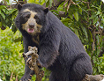
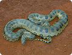
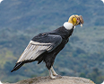

3 avistamientos pendientes de verificación

Oso de anteojos
Tremarctos ornatus
Individuo adulto, avistado solitario cerca del río. Sin comportamiento agresivo.
PENDIENTE

Anaconda verde
Eunectes murinus
Serpiente de aprox. 4 metros descansando en orilla del río.
PENDIENTE

Cóndor andino
Vultur gryphus
Pareja de cóndores en vuelo sobre la quebrada. Fotos claras adjuntas.
PENDIENTE